Rogues, masterminds, and monsters
From street-level crooks to reality-bending masterminds, Spider-Man’s villains push him to
his limits. The Sinister Six lead the charge, but they’re only part of a massive rogues’
gallery that has grown across every decade.
Classic threats
Green Goblin, Doctor Octopus, Vulture, Electro
Psychological
Norman Osborn, Kraven, Kingpin, Venom
Chaos
Carnage, Mysterio, symbiotes, multiverse threats
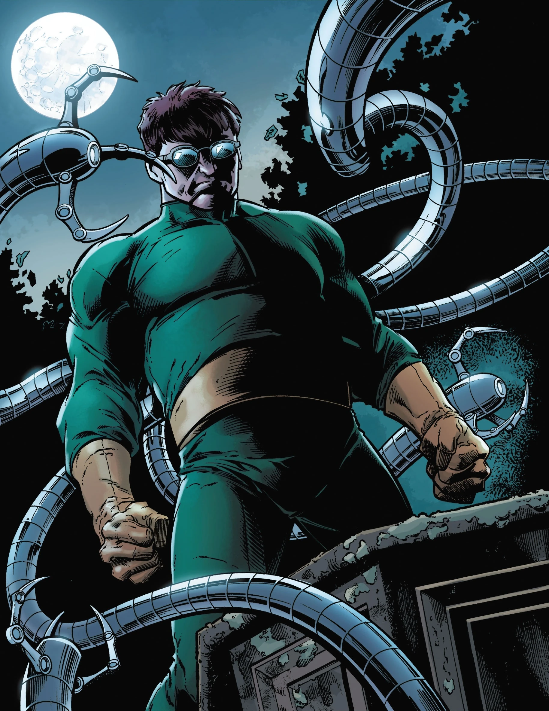
Leader · Scientist
Doctor Octopus (Otto Octavius)
First appearance: The Amazing Spider-Man #3 (1963)
Brilliant nuclear scientist fused to four mechanical arms after a lab accident.
Otto’s ego, strategy, and obsession with Peter make him one of Spider-Man’s most
dangerous recurring masterminds.
- Founder of the original Sinister Six
- Central to arcs like Superior Spider-Man
- Iconic in comics, animation, and films
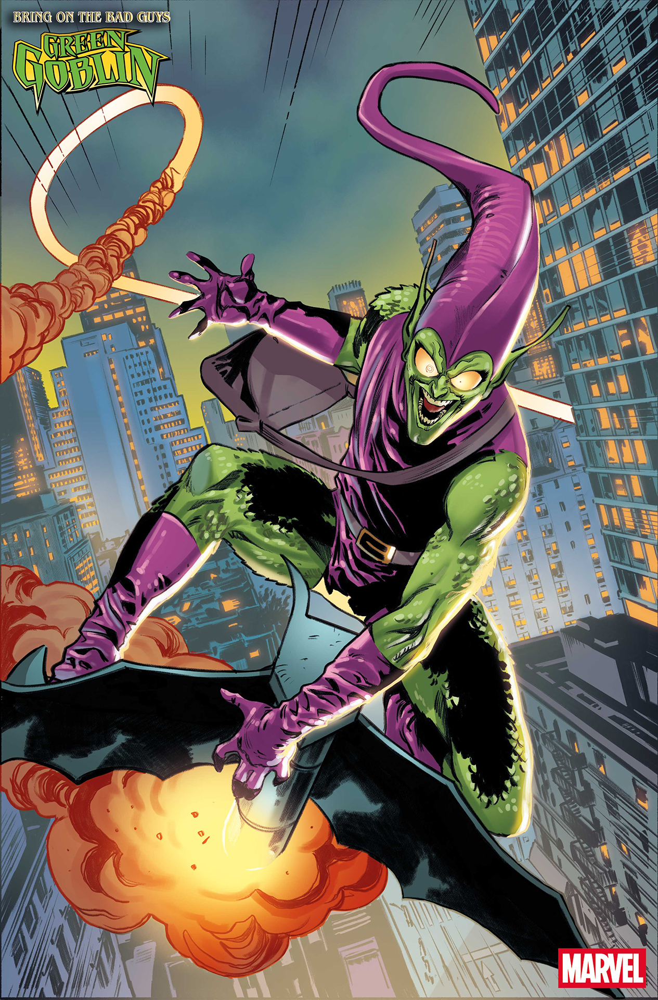
Arch-nemesis
Green Goblin (Norman Osborn)
First appearance: The Amazing Spider-Man #14 (1964)
Industrialist, father of Harry, and Peter’s most personal enemy. The Goblin serum
boosts Norman’s strength and madness, leading to the bridge tragedy that defines
Spider-Man’s early years.
- Responsible for Gwen Stacy’s death
- Appears in major events and films
- Merges political power with super-villain chaos
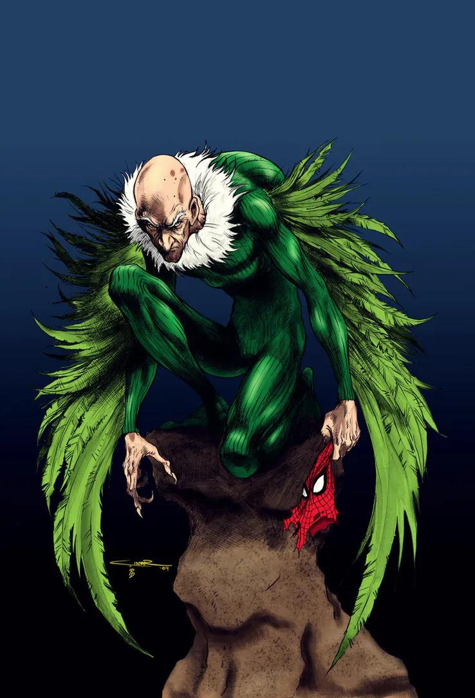
Aerial threat
Vulture (Adrian Toomes)
First appearance: The Amazing Spider-Man #2 (1963)
An engineer who uses a winged flight harness to commit high-altitude robberies.
Vulture represents older generations pushed into crime by greed and resentment.
- One of Spider-Man’s earliest recurring foes
- Reimagined as a salvage worker in the MCU
- Frequently joins Sinister Six lineups
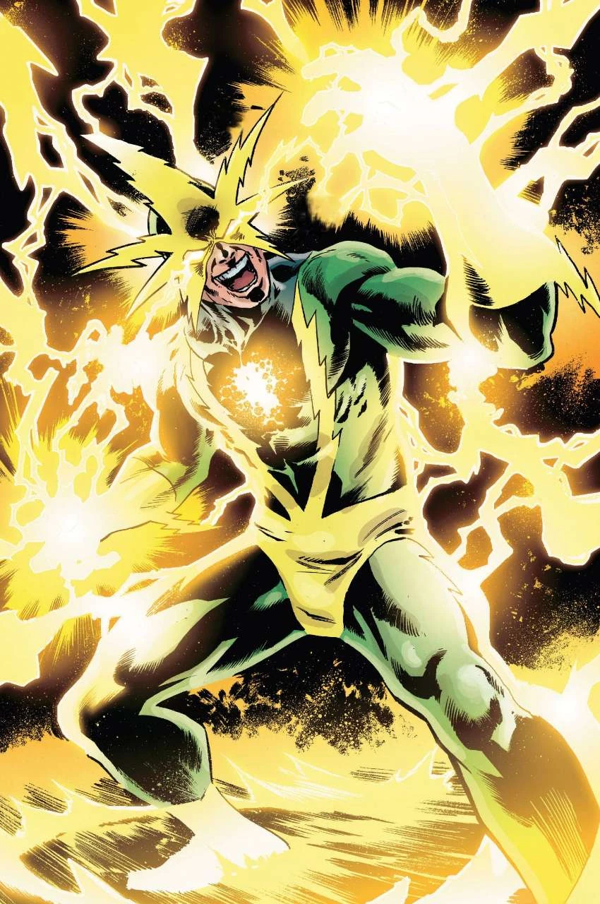
Energy manipulator
Electro (Max Dillon)
First appearance: The Amazing Spider-Man #9 (1964)
After being struck by lightning while working on power lines, Max can channel and
project electricity. Electro turns the city’s grid into a weapon.
- Visually iconic lightning mask and redesigns
- Key member in multiple Sinister Six rosters
- Appears in comics, animation, and film
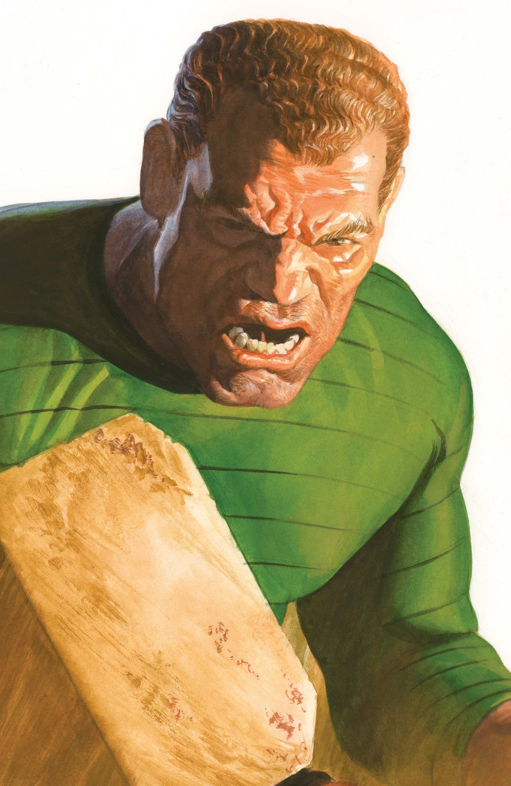
Shape-shifter
Sandman (Flint Marko)
First appearance: The Amazing Spider-Man #4 (1963)
A small-time crook transformed when his body fuses with irradiated sand. He can
reshape himself into weapons or massive structures, often torn between crime and
the hope of redemption.
- Physically overwhelming and hard to contain
- Sometimes written as an anti-hero
- Featured in multiple film adaptations
Illusionist
Mysterio (Quentin Beck)
First appearance: The Amazing Spider-Man #13 (1964)
A special-effects artist who uses illusions, gas, and holograms to break Spider-Man
mentally instead of physically. His attacks blur reality and perception.
- Mastermind behind hallucinations and fake realities
- Central to mind-bending arcs and film plots
- Shows how dangerous “smoke and mirrors” can be
Venom (Eddie Brock)
First appearance: The Amazing Spider-Man #300 (1988)
A fusion of alien symbiote and disgraced reporter. Venom knows Peter’s identity,
mirrors his powers, and blurs the line between villain and anti-hero.
Carnage (Cletus Kasady)
First appearance: The Amazing Spider-Man #361 (1992)
A symbiote bonded to a serial killer. Carnage represents pure chaos and forces
Spider-Man into uneasy alliances just to stop the bloodshed.
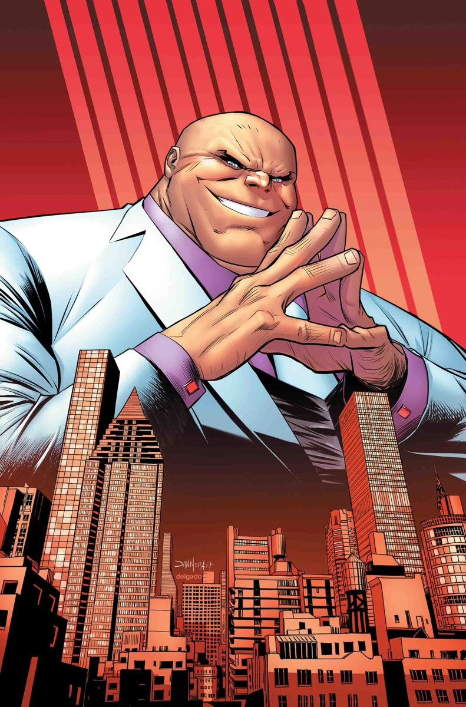
Kingpin (Wilson Fisk)
Key Spider-Man role: The Amazing Spider-Man #50 (1967)
Crime boss who runs New York from the shadows. While often tied to Daredevil,
Kingpin frequently clashes with Spider-Man over control of the city.
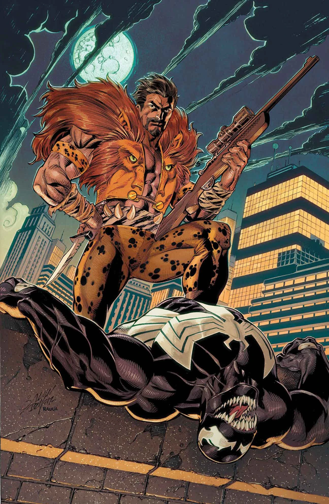
Kraven the Hunter
First appearance: The Amazing Spider-Man #15 (1964)
A big-game hunter obsessed with proving he can defeat Spider-Man. His most famous
story, Kraven’s Last Hunt, is a psychological battle more than a physical one.
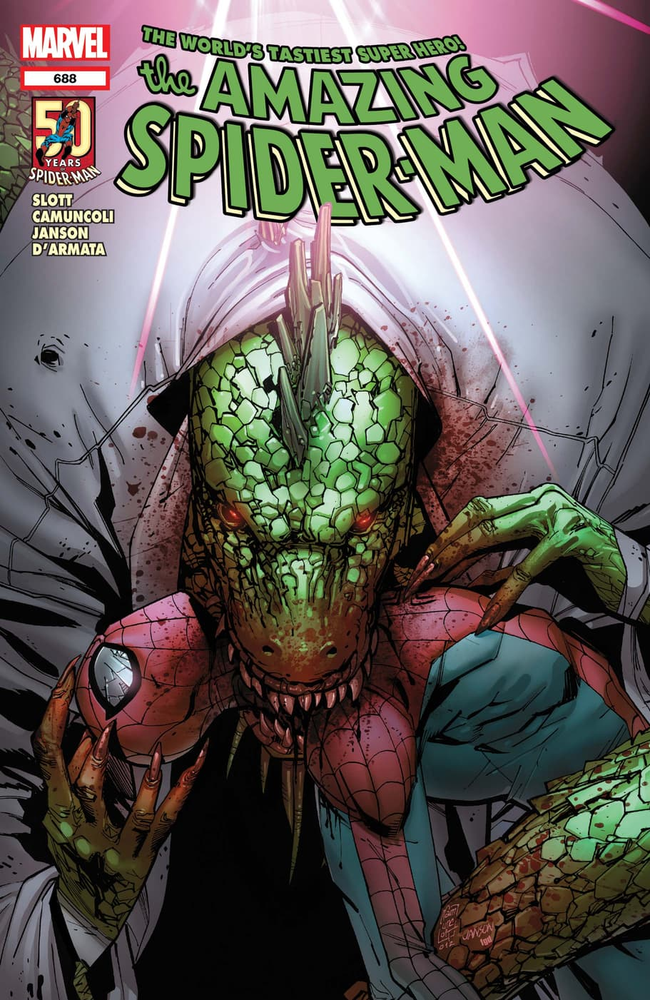
The Lizard (Dr. Curt Connors)
First appearance: The Amazing Spider-Man #6 (1963)
A kind scientist and mentor whose experiments turn him into a reptilian monster. The
Lizard embodies the “scientist gone wrong” tragedy that mirrors Peter’s own fears.
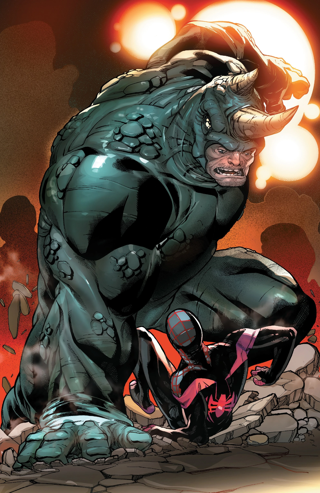
Rhino (Aleksei Sytsevich)
First appearance: The Amazing Spider-Man #41 (1966)
A low-level thug transformed into a nearly unstoppable battering ram. Rhino’s brute
strength and indestructible suit make him one of Spider-Man’s most physically overwhelming
foes, even if he’s not the brightest.
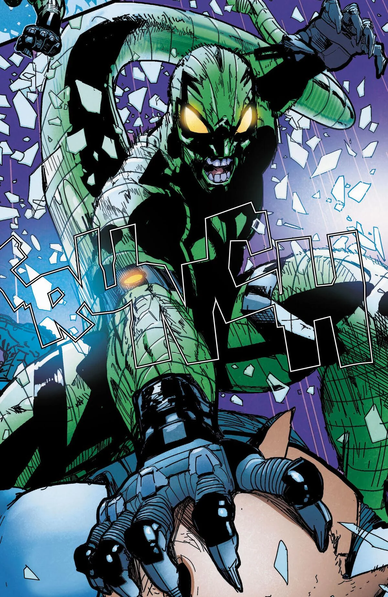
Scorpion (Mac Gargan)
First appearance: The Amazing Spider-Man #19–20 (1964)
Originally hired by J. Jonah Jameson to destroy Spider-Man, Gargan becomes the Scorpion
after a dangerous experiment. His armored suit and cybernetic tail turn him into a twisted
mirror of Peter’s powers pushed in a vicious direction.
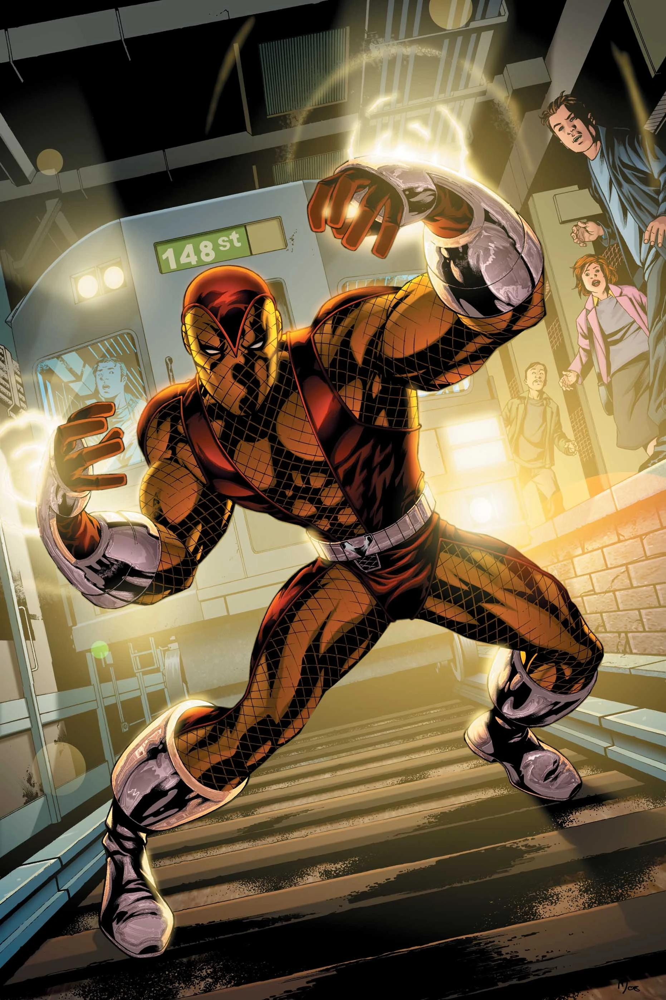
Shocker (Herman Schultz)
First appearance: The Amazing Spider-Man #46 (1967)
A brilliant engineer who designs gauntlets that fire concentrated vibration blasts.
Shocker is a working-class crook who treats super-crime like a job, making him a persistent
(and surprisingly effective) headache for Spider-Man.
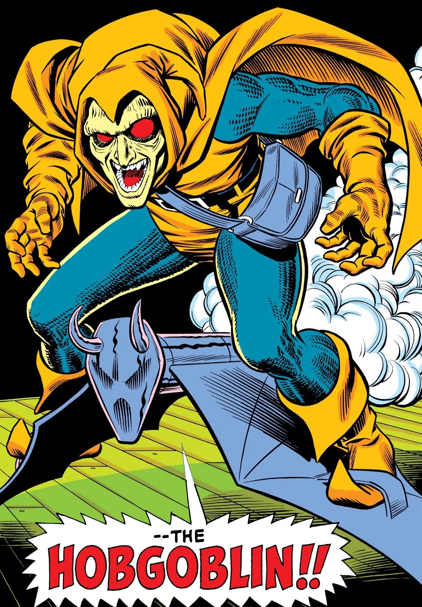
Hobgoblin (Roderick Kingsley & others)
First appearance: The Amazing Spider-Man #238 (1983)
A new villain who steals Norman Osborn’s Goblin tech and reinvents it with his own ruthless
flair. The mystery of Hobgoblin’s identity kept readers guessing for years and pushed the
legacy of the Green Goblin into the 1980s and beyond.